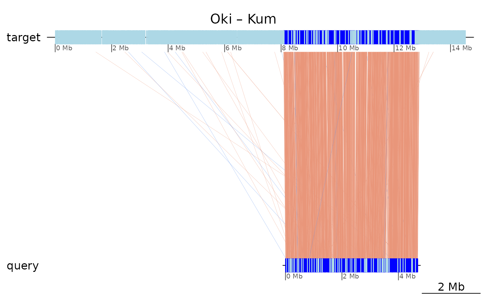
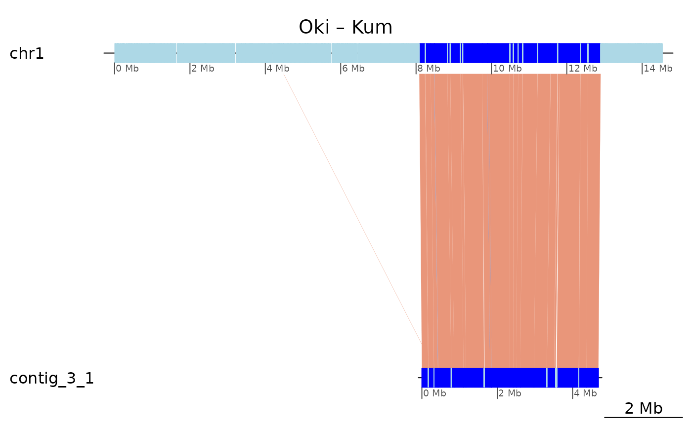

Introduction to the OikScrambling package
Charlotte West
Charles Plessy
30 March, 2022
Source:vignettes/OikScrambling.Rmd
OikScrambling.RmdIntroduction
This package contains a collection of vignettes to perform the analysis of pairwise genome alignments between Oikopleura genomes.
The core functions used here are maintained in our GenomicBreaks R package, which is fully documented at: https://oist.github.io/GenomicBreaks.
How to build this site
As some of the computations take time, we build the vignettes on OIST’s HPC cluster Deigo using the ?pkgdown::build_site function, in a Git clone in a subdirectory of the /flash filesytem.
/bucket/LuscombeU/common/Singularity/GenomicBreaks-0.10.0.sif Rscript -e "pkgdown::build_site(devel=TRUE, lazy=TRUE)"How to install or update the necessary packages
OikScrambling and GenomicBreaks
Sometimes it is necessary to upgrade the OikScrambling package; this is done with:
/bucket/LuscombeU/common/Singularity/GenomicBreaks-0.10.0.sif R CMD INSTALL .And before, it may be needed to update GenomicBreaks or BreakpointsData:
/bucket/LuscombeU/common/Singularity/GenomicBreaks-0.10.0.sif Rscript -e "remotes::install_github('oist/GenomicBreaks', repos=BiocManager::repositories())"
/bucket/LuscombeU/common/Singularity/GenomicBreaks-0.10.0.sif Rscript -e "install.packages('BreakpointsData', repos='https://oist.github.io/plessy_oikgenomes_drat/')"The trick is that the GenomicBreaks singularity images are hardcoded to install new packages in R/library/GBreaks_singularity, which bypasses the the problem that the images are read-only.
Command to recompute the BreakPoints.Rdata file
srun -pcompute -c8 --mem 300G --pty /bucket/LuscombeU/common/Singularity/GenomicBreaks-0.10.0.sif Rscript -e "pkgdown::build_article('LoadGenomicBreaks')"Data packages
BSgenome packages
We need the sequences of the studied genomes. They are provided in a drat repository: https://oist.github.io/plessy_oikgenomes_drat/.
Example command to install one Oikopleura BSgenome package if you do not yet have it:
/bucket/LuscombeU/common/Singularity/GenomicBreaks-0.10.0.sif Rscript -e "install.packages('BSgenome.Odioica.local.OKI2018.I69', repos='https://oist.github.io/plessy_oikgenomes_drat/')"Genome annotations
The annotations from /bucket/LuscombeU/common/Breakpoints/Annotations are distributed in the same drat repository as the alignment data.
install.packages('BreakpointsData', repos='https://oist.github.io/plessy_oikgenomes_drat/')Load pacakges
Core packages that provide functions we use a lot.
suppressPackageStartupMessages({
library('GenomicBreaks')
library('BSgenome')
library('GenomicFeatures')
library('ggplot2')
library("BiocParallel")
})
requireNamespace("rGADEM")## Loading required namespace: rGADEM
requireNamespace("ggseqlogo")## Loading required namespace: ggseqlogoThe accessory function OikScrambling:::loadAllGenomes() attaches BSgenome packages in the session and outputs a SimpleList containing references to the BSgenome objects for convenience, such as easy looping, and tab-completion to show the available objects.
OikScrambling:::loadAllGenomes## function (compat = TRUE)
## {
## suppressPackageStartupMessages({
## library("BSgenome.Oidioi.OIST.OKI2018.I69")
## library("BSgenome.Oidioi.OIST.OSKA2016v1.9")
## library("BSgenome.Oidioi.OIST.Bar2.p4")
## library("BSgenome.Oidioi.OIST.KUM.M3.7f")
## library("BSgenome.Oidioi.OIST.AOM.5.5f")
## library("BSgenome.Oidioi.genoscope.OdB3")
## })
## genomes <- SimpleList(sapply(c("OKI2018.I69", "OSKA2016v1.9",
## "Bar2.p4", "KUM.M3.7f", "AOM.5.5f", "OdB3"), BSgenome::getBSgenome))
## if (isTRUE(compat))
## names(genomes) <- c("Oki", "Osa", "Bar", "Kum", "Aom",
## "Nor")
## genomes
## }
## <bytecode: 0x55ac458eec90>
## <environment: namespace:OikScrambling>
(genomes <- OikScrambling:::loadAllGenomes())## List of length 6
## names(6): Oki Osa Bar Kum Aom Nor
## Genome lengths
(genome.lengths <- sapply(genomes, \(g) sum(seqlengths(seqinfo(g)))))## Oki Osa Bar Kum Aom Nor
## 64281565 56625162 55793437 64653574 56753784 70471451
## Genome average AT content (multicore computation)
(genomes.AT <- BiocParallel::bplapply(genomes, \(g)
weighted.mean(letterFrequency(getSeq(g), "AT", as.prob = TRUE), seqlengths(g))) |> unlist())## Oki Osa Bar Kum Aom Nor
## 0.5893477 0.5831737 0.6004930 0.5891578 0.5852745 0.5686432Load data
The OikScrambling:::loadAllAnnotations() function returns TxDB objects. Be careful that they are broken each time the R session restarts, because they rely on local file storage.
(annots <- OikScrambling:::loadAllAnnotations() |> suppressWarnings())## List of length 8
## names(8): Oki Osa Bar Kum Aom Nor Ply RosFor vignettes that do not use information on the intron/exon structure of genes, the OikScrambling:::loadAllTranscriptsGR() returns a SimpleList of GRanges, which is more convenient. Bonus point: the dNdS value for conserved genes is included.
(transcripts <- OikScrambling:::loadAllTranscriptsGR() |> suppressWarnings())## List of length 8
## names(8): Oki Osa Bar Kum Aom Nor Ply RosGenomicBreaks object
The core data is a list of GenomicBreaks::GBreaks() objects that is built by a separate vignette (vignette("Load genomic break data"), package="OikScrambling").
The query genome is the one that was provided as a FASTA file and aligned to the target genome (the one that was indexed by the aligner). The target genome is the main part of the object, and the query genome information is contained in the metadata columns (mcols) of the structure.
load("BreakPoints.Rdata")
gbs$Oki_Osa## GBreaks object with 30852 ranges and 8 metadata columns:
## seqnames ranges strand | score query
## <Rle> <IRanges> <Rle> | <numeric> <GRanges>
## [1] chr1 152288-154766 - | 2142 PAR:15511940-15514448
## [2] chr1 217240-217647 + | 899 PAR:2352378-2352781
## [3] chr1 300272-301113 + | 1163 Chr2:1044232-1044999
## [4] chr1 476328-477468 - | 915 Chr2:3294310-3295456
## [5] chr1 511233-512037 - | 295 YSR:1698314-1699115
## ... ... ... ... . ... ...
## [30848] YSR 2759988-2760289 - | 332 Chr2:9474939-9475240
## [30849] YSR 2760320-2761360 - | 754 Chr2:9473557-9474600
## [30850] YSR 2783954-2785297 - | 2677 Chr2:9464587-9465931
## [30851] YSR 2790986-2795531 - | 4996 Chr2:9459905-9464402
## [30852] YSR 2832349-2836860 - | 7232 YSR:1771962-1776463
## Arm rep repOvlp transcripts flag nonCoa
## <factor> <CharacterList> <integer> <Rle> <character> <logical>
## [1] short rnd 1820 <NA> <NA> TRUE
## [2] short <NA> 0 g4.t1 <NA> TRUE
## [3] short <NA> 0 <NA> <NA> TRUE
## [4] short <NA> 0 <NA> <NA> TRUE
## [5] short ltr-1 0 <NA> <NA> TRUE
## ... ... ... ... ... ... ...
## [30848] YSR <NA> 0 <NA> Col FALSE
## [30849] YSR <NA> 0 <NA> Col FALSE
## [30850] YSR <NA> 0 <NA> Col FALSE
## [30851] YSR ltr-1,tandem 4396 <NA> <NA> FALSE
## [30852] YSR ltr-1 4512 <NA> <NA> TRUE
## -------
## seqinfo: 19 sequences from OKI2018.I69 genome
gbs$Oki_Osa$query## GRanges object with 30852 ranges and 4 metadata columns:
## seqnames ranges strand | Arm rep
## <Rle> <IRanges> <Rle> | <factor> <CharacterList>
## [1] PAR 15511940-15514448 * | long <NA>
## [2] PAR 2352378-2352781 * | short <NA>
## [3] Chr2 1044232-1044999 * | short <NA>
## [4] Chr2 3294310-3295456 * | short rnd
## [5] YSR 1698314-1699115 * | YSR <NA>
## ... ... ... ... . ... ...
## [30848] Chr2 9474939-9475240 * | long <NA>
## [30849] Chr2 9473557-9474600 * | long <NA>
## [30850] Chr2 9464587-9465931 * | long <NA>
## [30851] Chr2 9459905-9464402 * | long <NA>
## [30852] YSR 1771962-1776463 * | YSR <NA>
## repOvlp transcripts
## <integer> <Rle>
## [1] 0 <NA>
## [2] 0 g7612.t1
## [3] 0 g3324.t1
## [4] 63 <NA>
## [5] 0 g15233.t1
## ... ... ...
## [30848] 0 g5781.t1
## [30849] 0 g5781.t1
## [30850] 0 g5779.t1
## [30851] 0 g5777.t1;g5778.t1
## [30852] 0 g15241.t1
## -------
## seqinfo: 483 sequences from OSKA2016v1.9 genomeIn the example displayed above, the object contains the pairwise alignment between genomes of two dioceous Oikopleura individuals; one from the Osaka assembly OSKA2016 (target) and one from the Okinawa assembly OKI2018_I69 (query).
Long and short arms
The long and short arms are annotated in the GBreak objects that are built by the vignette (vignette("Load genomic break data")), using the function GenomicBreaks::flagLongShort(). A copy of the arms annotations is provided in the longShort list.
longShort## List of length 3
## names(3): OKI2018.I69 OSKA2016v1.9 Bar2.p4
longShort$Oki## NULLRepeats
(reps <- OikScrambling:::loadAllRepeats())## List of length 6
## names(6): Oki Osa Bar Kum Aom NorBreakpoints and alignment stops
We define an alignment stop to be a position defined in either the target or query genome, where an alignment begins or ends, and a genomic breakpoint (or simply breakpoint) to be a genomic structural mutation, arising from breakage and repair of the chromosome. Such structural events include insertion, deletion, inversion and translocation, and often arise during recombination.
Phylogenetic cladogram
We assume that the North Pacific and the Atlantic species are more related to each other than to the Okinawan species.
requireNamespace("ade4")
treeLeaf <- function(name, length=NULL) {
if(!is.null(length)) length <- paste0(':', length)
paste0(name, length)
}
treeNode <- function(branch1, branch2, length = NULL) {
if(!is.null(length)) length <- paste0(':', length)
paste0('(', branch1, ',', branch2, ')', length)
}
addRoot <- function(branch) paste0(branch, ";")
tree <-
addRoot(
treeNode(
treeNode( length = 2,
treeLeaf("Okinawa", 1),
treeLeaf("Kume", 1)
),
treeNode( length = 1,
treeNode( length = 1,
treeLeaf("Osaka", 1),
treeLeaf("Aomori", 1)
),
treeNode( length =1,
treeLeaf("Norway", 1),
treeLeaf("Barcelona", 1)
)
)
)
)
plot(ade4::newick2phylog(tree))
Coalescing alignments
Large syntenic regions can often appear cluttered with alignment breaks. They are either an artefact (for instance in case of incomplete purge of haplotypes) or true breakpoint. Even in that case, it may be needed to coalese them in order to facilitate other computations such as the detection of inversions.
The algorithm in GenomicBreaks::coalesce_contigs() is used to produce a new GBreaks object with fewer alignment breaks by coalescing alignments separated by short (user specified) distances.
The computation is done in vignette("Load genomic break data")
The resulting GRanges object has far fewer alignments and therefore far fewer alignment stops. The algorithm is an initial step in alignment stop filtering, with the goal of a reduced number of alignment stops that have a high probability of being breakpoints.
sapply(gbs, length)## Oki_Osa Oki_Bar Oki_Kum Oki_Aom Oki_Nor Osa_Oki Osa_Bar Osa_Kum Osa_Aom Osa_Nor
## 30852 30841 15086 32398 30055 31322 24430 31182 15261 24497
## Bar_Oki Bar_Osa Bar_Kum Bar_Aom Bar_Nor Ply_Ros Ply_Rob Ply_Sav Ply_Oki Rob_Ros
## 32265 24851 31557 24717 15184 40659 56000 68463 2127 60384
## Rob_Ply Rob_Sav Rob_Oki Dme_Dbu Dme_Dsu Dme_Dya Dme_Dma
## 60205 70201 2347 47893 68750 23059 9732
sapply(coa, length)## Oki_Osa Oki_Bar Oki_Kum Oki_Aom Oki_Nor Osa_Oki Osa_Bar Osa_Kum Osa_Aom Osa_Nor
## 8843 8533 5424 8864 8875 8836 4081 8776 4950 5227
## Bar_Oki Bar_Osa Bar_Kum Bar_Aom Bar_Nor Ply_Ros Ply_Rob Ply_Sav Ply_Oki Rob_Ros
## 8493 4073 8529 4197 6188 7701 4969 4041 1306 4566
## Rob_Ply Rob_Sav Rob_Oki Dme_Dbu Dme_Dsu Dme_Dya Dme_Dma
## 4812 4148 1402 5959 992 1816 2706Pairwise chromosome plots
Oki – Kum
The plot is not complete because the Kume assembly is not chromosome-scale.
plotApairOfChrs(coa$Oki_Kum, "chr1", main = "Oki – Kum")
Same after double-coalescing.
plotApairOfChrs(coa2$Oki_Kum, "chr1", main = "Oki – Kum")
More in the parallel plots vignette!
In the parallel plots vignette (vignette("ParallelPlots", package = "OikScrambling")), we build a more more comprehensive collection of plots and explore arrangements for a figure panel in paper.
Structural variants
Trivial inversions
Documentation
Details can be found in vignette("Inversions", package = "OikScrambling").
Trivial translocations
Representation
The translocation below:
┌──────────────┬──────────────┬──────────────┐
│ chrA:101-200 │ chrA:201-300 │ chrA:301-400 │ (Target genome)
└──────────────┴──────────────┴──────────────┘
+ + + (Alignment direction)
┌──────────────┬──────────────┬──────────────┐
│ chrB:101-200 │ chrC:201-300 │ chrB:301-400 │ (Query genome)
└──────────────┴──────────────┴──────────────┘Is represented as:
exampleTranslocation## GBreaks object with 3 ranges and 1 metadata column:
## seqnames ranges strand | query
## <Rle> <IRanges> <Rle> | <GRanges>
## [1] chrA 100-200 + | chrB:100-200
## [2] chrA 201-300 + | chrC:201-300
## [3] chrA 301-400 + | chrB:301-400
## -------
## seqinfo: 1 sequence from an unspecified genomeSee in in vignette("LoadGenomicBreaks", package = "OikScrambling") how trivial translocations are removed, and in vignette("RepeatRegions", package = "OikScrambling") why they are removed.
Genomic Features
Moved to vignette("GenomicFeatuers", package = "OikScrambling"):
- Tandem repeats
- Coverage
- Nucleic acid content heatmaps
- Cluster analysis
- Evidence for breakpoint hotspots
- Tandem repeat coverage around alignment stops (breakpoints)
- Gene feature coverage around alignment stops (breakpoints)
- Gene feature coverage around PWM hits
- Okinawa genome coverage